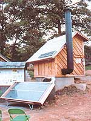
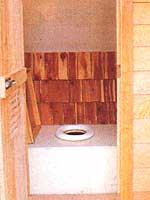
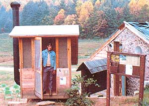
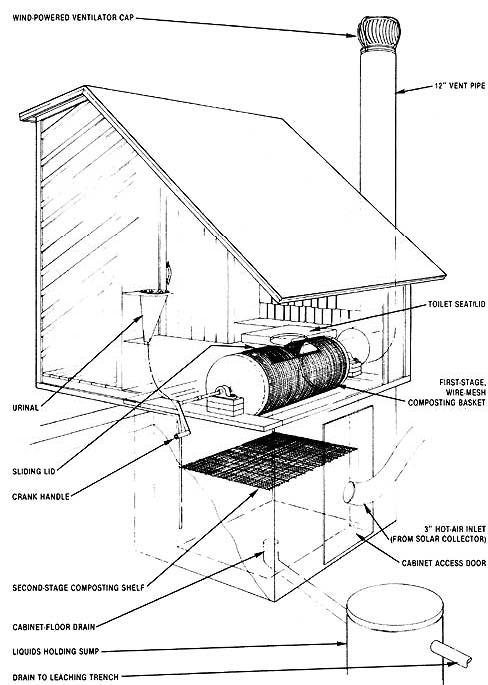

It's pretty hard to deny that the common flush toilet is the easiest, most "euphemistic" apparatus yet invented for disposing of human waste. Trouble is, it's also the most wasteful: Just flip that chrome lever and - whoosh! - five gallons of potable water take the plunge, to carry away a few ounces of solid or (even more wasteful) liquid effluvium.
So what's the best alternative available to the growing number of environmentally minded folk who are hunting for a convenient, economical way to dispose of human waste without creating a water-squandering situation? That's the question Eco-Village staffer Jay Herndon asked nearly a year ago when he decided to assign himself to Project Privy. His mission: to build a good, ecological commode.
The Search is On
By examining and weighing the options - water-saver toilets, nonrecycling waterless commodes and waterless waste recyclers (better known as composters ) - Jay saw almost immediately that the all-around most sensible choice would be a composter. In addition to disposing of sewage without the use of any water, this improved outhouse system offers the bonus of organic fertilizer.
Once Herndon had decided on waterless waste recyclers, his next step was to look around at what composting toilets others had come up with, both commercially and on a homebuilt basis. He soon learned that the U.S. Forest Service in his neck of the woods was using a composter. It was a "stair-step" model, the type that requires a large (4-by-4-by-12 foot) subfloor space, and needs close to a two-year accumulation period for a batch of composted material to work its way down to the bottom, where it can then be removed. A good effort on the part of the forest service, but not what he was looking for.
A second model, called a "two batcher," had been tried by several local do-it-yourselfers, but it wasn't all Jay hoped for either: It required too frequent shoveling of the heap from one composting bin to another. Moreover, both of the units he inspected evidenced some degree of insect infestation and, you guessed it, odor.
The next step in the search for the perfect waterless toilet was to scout out the commercial offerings. Here, the main problem was price: The average cost of commercial composters is in excess of a thousand dollars, and such units almost always require an external source of power to provide venting and drying heat.
So, by identifying the characteristics that he wanted to avoid, Jay came up with a set of standards for his composter: It should take up as little subfloor space (especially vertical) as possible, use no conventional power to supply heat, require minimal servicing and handling of waste heaps, produce no odors, be bugproof, and be considerably less expensive to construct than even the least costly commercial model.
The Evans Coprophage No. 3
Our compost sleuth now made a thorough survey of the available literature. Of the many designs for owner-built systems Jay studied, the Evans Coprophage No. 3 (presented in Rodale's excellent book Goodbye to the FlushToilet ) seemed to make the most sense. This unit met many, but not all, of the requirements, the primary shortcomings being that it offered no provision for the sanitary disposal of liquid wastes (they were simply dipped out) and that it depended on a small electric fan for venting. Furthermore, there was no heat source - an important, almost mandatory, element in any truly efficient composter.
But, despite these undeniable flaws, the overall design of the No. 3 was sound. A two-stage composting process employed a rotating basket drum that was set above a second-stage decaying shelf. So Herndon decided to adopt the model as the starting point from which he created his own composting toilet.
An Inside Look at Mother's Outhouse
Today, what you first encounter when you visit the final product at the Mother's 622-acre EcoVillage research center is an outhouse-type structure of rough-sawn pine. In fact, if you approach the commode from the front, that's all you'll see. (You'd have to go around back to spot its subfloor portions, which are partially buried in the side of a hill.)
Open the door and you'll be standing inside a screened-in porch, a feature added to help bar bugs. An inner door, this one weathertight, opens into a fresh-smelling room that's illuminated by a small photovoltaic-powered light. A glance around reveals the source of the pleasant aroma: split-cedar shingles covering the walls. A small urinal is attached to one wall, and an outhouse-type bench with a tight-fitting lid completes the scenery. Lift the lid and you'll see a conventional toilet seat. To lessen visibility "down below," the inner walls of the composter's lower parts have been painted flat black.
Each of these touches serves a purpose. The toilet lid is airtight to keep out insects and to help maintain a rapid vent flow when closed. The urinal helps direct liquid wastewater around the drying heaps and sends it down a drain at the bottom of the cabinet, where it's eventually released into a small, gravel-filled subterranean leaching trench.
The wall covering of cedar shingle not only gives the interior of the privy an attractive appearance and fragrance, but also helps to fend off bugs (there's something about cedar that the little crawlers and fliers can't stand). In addition, there's a sandwiched layer of rolled fiberglass insulation between the inner shingles and the outer pine. To see more of the composter, you'll have to walk down the hill (it's not all that much of a hill) and around behind the privy.
The subfloor portions of the commode are enclosed within a 4-by-4-by-5 foot poured-concrete-block cabinet, the inside of which is water- and lightproofed and - as mentioned earlier - painted black. The outside surface of the cabinet is lined with inch-thick, foil-faced insulation (if you want to get technical, it's called polyisocyanurate) and is finished with a coating of stucco.
On the west side of the building you'll spot a crank handle that's used for periodic rotations of the composting drum. Up the east side of the structure runs a 12-inch diameter galvanized duct pipe that vents the composting cabinet to prevent odors from entering the "comfort room" when the seat lid is raised. The pipe is painted flat black to increase upward venting flow, extends high enough to exhaust its gases above head level, and is capped with a wind-driven turbine ventilator.
At the lower back of the concrete composting cabinet you'll see a 3/4-inch-by-2-by-4 foot plywood door that provides easy access for removal and cleaning chores. An insulation-wrapped, 3-inch diameter galvanized duct pipe is vented in through the plywood access door and carries a flow of high-temperature solar-heated air into the composting chamber. That warmth comes from the flat-plate solar collector that stands just behind the privy. It has a collection area of 32 square feet and is of the inexpensive-to-build fluorescent-light-tube type. (For more on the subject, see Mother's Fluorescent Tube Solar Collector, September/October 1978.) Jay used this particular suncatcher because it was "just lying around," but he points out that any type and any size of solar air-warmer will work, as long as it provides heated air to the composter.
As a final, high-tech (and expensive!) touch, the south-facing slope of the building's roof sports a photovoltaic panel to provide power for the interior light.
There's More to Composting Than Meets the Eye
That's all that meets the eye, because the working components of the composter are hidden inside the subfloor cabinet. They work like so: Waste material entering the cabinet falls into the wire drum through an opening that can be closed, when necessary, via a remote lever. At intervals dictated by frequency of use - that's every couple of days at the busy Eco-Village, but would be only every week or so for a family of six - this cylinder drum gets spun around a turn or two, which shakes the fresh deposits down to the lower rack and provides aeration (oxygen is a must for composting).
The rotating drum is made of 3/4-inch expanded-metal mesh that's coated with epoxy to prevent corrosion and to expedite the cleaning chores. Its length is just under 4 feet, and each end is capped with a recycled 21 3/4-inch-diameter hot-water-tank end. Bearing-mounted spindles, or axle shafts, are threaded into each end cap, with one spindle passing through the wall and onto the crank handle.
When waste material dries and decomposes sufficiently to pass through the drum's mesh, it falls some 2 1/2 feet to the second-stage composting rack. This flat "bench" is made of underlying 2-by-4-inch galvanized "hog wire" (for strength and rigidity) and covered with galvanized window screening. The fine mesh keeps all but liquids from falling through to the floor of the cabinet.
Since this final-stage rack is level with the bottom of the access door, the person servicing the commode can easily shovel the dried, composted heap into a wheelbarrow outside. The hot-air vent enters just below this bottom shelf, so the heat it carries rises through both composting levels. (The four-to-one ratio between the 12-inch vent duct and the 3-inch heat inlet takes advantage of the Venturi principle to help insure a rapid upward draft.)
A drain set into the lowest point in the sloping floor empties liquid leftovers into a 50-gallon concrete holding tank which, in turn, feeds into the gravel leaching trench.
Servicing Requirements
Jay's composting toilet requires only minimal servicing periodic rotations of the drum (a no-fuss "outside" job) plus a semiannual cleanup. For the latter chore, the cabinet is emptied, then a bucket of hot, soapy water and a long-handled brush are used to scrub down the drum, the second-stage shelf, and the interior walls and floor of the cabinet. After that, it's "Close 'er up for another six months!"
As for the human-derived compost, the fertilizer is ready to be applied to nonfood plants - lawns and flowerbeds - just as it comes from the cabinet. But if you wish to use the compost on your vegetable garden, you'll need to start a second, outside, composting heap to guarantee safe, complete biological breakdown - and, even then, it's best to apply the fertilizer between growing rows, and not directly on the plants. Better yet, add your composted "night soil" to your plot in the autumn, working it into the ground after the crops have been harvested.
But Does It Work?
You bet it does! The composter has been in active use for nearly a year now, and it's exceeding all expectations. The Eco-Village crew alone provides a minimum of ten visits a day in the off-season, and once our many visitors arrive, the waterless commode regularly services 30 people daily. (Over the 1983 Independence Day weekend, visitors to the "little house" used 18 rolls of two-ply tissue!) And so far, we've detected no signs of waste-digestion problems, odors or insect troubles - the three most common composter bugaboos.
The prototype unit has been so successful, in fact, that it was the first (and at this writing, still the only) composting commode to receive approval from our county inspector - and Eco-Village staffers are planning to build several more almost-exact replicas in the next few months.
Almost-exact replicas? That's right: There are a pair of minor changes Jay says he'd make next time around. The first of these modifications would be to use 1-inch rather than 3/4-inch expanded-metal mesh in the drum. He feels that the present, smaller, mesh holds material in the basket longer than necessary, and that the 1-inch mesh would speed composting with no decrease in efficiency.
The other change also has to do with the drum. Instead of threading the weight-bearing spindles into each of the end caps, Jay says he'd recommend brazing them into place, because they have a tendency to loosen a little with use.
Economy Tips for the Do-it-yourselfer
Mother's prototype, not including the photovoltaic panel, cost just over four hundred dollars, beating the price of the least expensive commercial units all to pieces. And though Jay was able to scrounge the solar collector and a few other goodies from existing Eco-Village projects, the typical do-it-yourselfer should nonetheless be able to come up with a waterless toilet that works every bit as well as ours and, quite possibly, costs far less.
How? Well, first forget about the fancy solar-cell lighting. Just hook into the existing electricity if the loo is to be an inside job, or use a flashlight if it's an "out" house. Then too, while some sort of cedar on the interior walls is recommended for its pleasant scent and bug-fighting capabilities, you don't have to use expensive closet shingles (the ones in our commode ran the total bill up some sixty dollars!). Cedar fiberboard will do the job just as well at a fraction of the cost. Along the same lines, fiberglass-coated, exterior-grade plywood can be substituted for the filled-concrete-block composting cabinet, and a rust-treated oil drum could be used in place of the concrete tile for a liquids sump.
And, of course, there are far less expensive ways to build the "comfort room" itself using recycled lumber instead of store-bought planks. You can certainly get by without a screened-in entry area, too.
For a good many folks, the total cost of the aboveground portions of the unit can be eliminated simply by building the composter cabinet beneath the floor of your house and tucking the toilet itself into a convenient closet. All you need for this inside installation is a room large enough to house the facility and a minimum of 4-feet of vertical clearance under the floor. If you're lucky, the composting toilet will fit into the space currently allotted to your old WC. (Of course, it should be near an outside wall for easy access from below.)
So if you're tired of the wasteful habits of your five-gallon flusher and want an economical, ecologically sound waterless toilet that provides organic fertilizer as a bonus, follow Eco-Village technical staffer Jay Herndon's lead and build a composting commode. And, oh yes, if you're in the neighborhood (it's a nice neighborhood, really), stop by and take a peek at Mother's Eco-privy - we're proud of it!
For more good reading on the subject, why not check out the article Alternatives to the Five-Gallon Flush, March/April 1983.
|
 MOTHER EARTH NEWS STAFF Solar-heated air enters the composting cabinet via a 3-inch duct, and a 72-inch vent pipe assures rapid airflow for proper compost drying and odor elimination. |
 MOTHER EARTH NEWS STAFF The interior of Mother's "little house." Notice the split-cedar shingles on the back wall, and the raised, airtight lid to the left of the seat. |
 MOTHER EARTH NEWS STAFF Jay Herndon, the Eco-Village staffer who designed and built the composting privy, beams proudly from the screened-in porch of his handiwork. |
|
 MOTHER EARTH NEWS STAFF A complete construction diagram of the composting commode. |
|
|